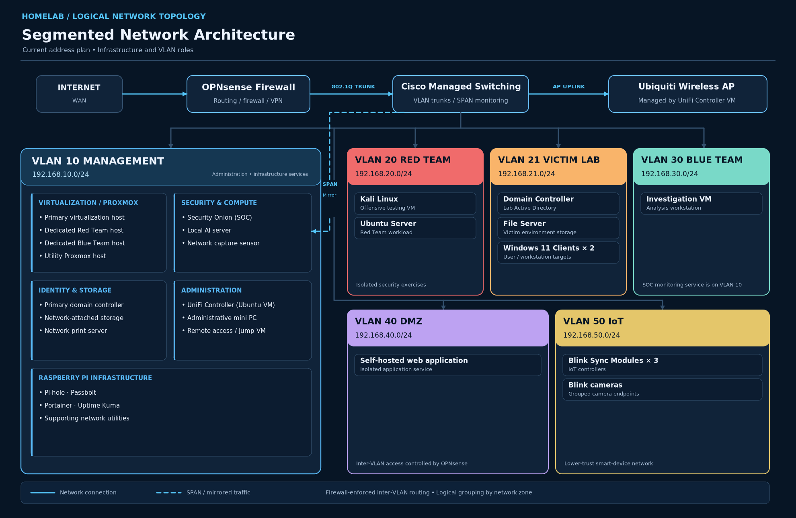
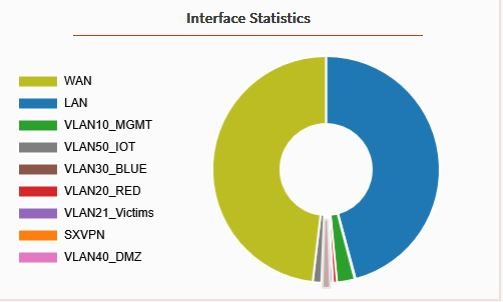
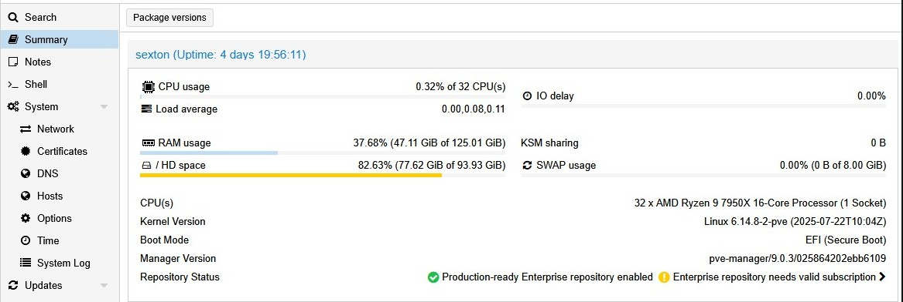

Security monitoring
Security Onion Monitoring Environment
Deployed Security Onion with Zeek and Suricata to monitor mirrored lab traffic and practice event review and network investigation.
Explore Security Onion →IT support · Network infrastructure · Cybersecurity labs
I work in county government IT, supporting users and troubleshooting systems, devices, and networks. Outside of work, I design and maintain a hands-on lab focused on network segmentation, systems administration, virtualization, and security monitoring.
Featured work
Hands-on technical projects featuring network diagrams, monitoring screenshots, and explanations of the systems I configured.
Security monitoring
Deployed Security Onion with Zeek and Suricata to monitor mirrored lab traffic and practice event review and network investigation.
Explore Security Onion →
Network infrastructure
Built an enterprise-style lab with separate network zones, Cisco switching, Active Directory, Windows and Linux systems, and supporting services.
Explore the homelab →
Network security
Configured routing, inter-VLAN firewall rules, and controlled trust boundaries across management, red-team, blue-team, victim, and IoT networks.
Explore firewall project →
Virtualization
Managed multiple virtualization hosts, VLAN-aware network bridges, and virtual machines used for infrastructure and cybersecurity exercises.
Explore Proxmox project →Technical capabilities
Professional support responsibilities and independently developed infrastructure and security skills.
Windows endpoints, Active Directory, Group Policy, DNS, DHCP, user access, software deployment, and technical troubleshooting.
Cisco switching, VLANs, routing, OPNsense, VPN connectivity, Linux administration, Proxmox, and virtual networking.
Security Onion, Zeek, Suricata, SPAN traffic monitoring, log review, network segmentation, and controlled defensive testing.
Background
County government IT · Professional experience
Support users and troubleshoot endpoint, application, account, and network issues in an operational environment. Work with Windows administration, Active Directory, network services, and day-to-day IT support.
Additional hands-on work in network security, virtualization, and threat monitoring through independent technical projects.
Graduate research · In progress
In-progress master's research on VLAN segmentation, least-privilege firewall policies, and credential-based lateral movement in a controlled Active Directory lab.
Next steps
Professional experience, education, skills, and projects in a downloadable PDF.
Connect with me or view my public work and technical projects.